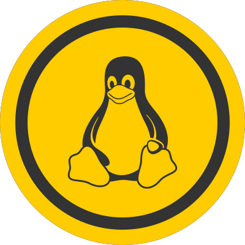
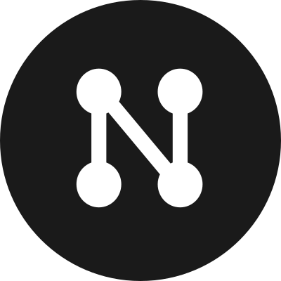

OpenWISP is one of the accepted mentoring organizations of the Google Summer of Code 2020
OpenWISP Features
OpenWISP is a network management system that allows managing and automating several aspects of a network:
- dynamic auto-configuration of new nodes
- creation of VPN tunnels
- initialization of WiFi access points
- configuration of mesh networks
- configuration of any other network configuration supported by OpenWRT
 
The server side application is modular and highly extensible, programmable and hackable.
The web modules are built with Django a web framework which is widely used, easy to extend and has a rich ecosystem of reusable components which can be used to create networking applications that are tailored to the needs of your organization.
Its configuration engine
which generates the configuration for routers and networking devices is
written in Python
and based on NetJSON.
At the moment only OpenWRT is supported for production usage,
but an experimental
configuration backend for Ubiquiti AirOS
is also available.
Moreover, the engine allows
writing custom configuration backends
to support any type of network OS which allows remote configuration.
OpenWISP Controller
This video shows how OpenWISP can be used as a network controller and wifi controller.
Configuration Templates
Auto Registration
Geographic and Indoor Map
VPN and x509 Certificates
Network Topology
IP & subnet administration (IPAM)